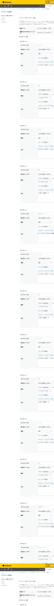

GovAppsプラグイン 安全性を確認できる無料kintoneプラグイン集
文字列(複数行)またはリッチエディターフィールドに、あらかじめ登録した定型文(テンプレート)を 挿入するプラグインです。テンプレート本文には他フィールドの値を埋め込むプレースホルダーを 書けます。本文の一部を「[[ ]]」で囲むと、その部分だけをサブテーブルの行数ぶん繰り返し展開 できるため、固定の前置き・後書きの文章とテーブル明細の繰り返し部分を1つのテンプレートの中で 自由に組み合わせられます。複数のテンプレートをヘッダーのドロップダウンから選んで挿入する 通常モードのほか、フォーム上のラジオボタンの選択肢に応じて挿入するテンプレートが自動的に 決まる連動モードにも対応しています。
ヘッダーのドロップダウンから「お礼メール」「一次回答」などのテンプレートを選び、「テンプレ挿入」ボタンを押すだけで、担当者名や件名といったレコードの値が埋め込まれた定型文を挿入できます。追加(末尾に追記)/上書き(既存の内容を置き換える)を切り替えられるので、書き足したいときも、書き直したいときも同じボタンで対応できます。複数のテンプレートを切り替えながら使えるので、対応内容ごとに文面を書き分けられます。
ラジオボタン連動モードを使うと、ヘッダーにはドロップダウンを出さず挿入ボタンだけを表示し、その時点で選ばれているラジオボタンの値(承認/却下など)に対応するテンプレートを自動で判定して挿入します。対応するテンプレートが無い選択肢のときはボタンが無効になり、選び間違いによる誤挿入を防げます。
本文中の繰り返したい部分を「[[ ]]」で囲むと、その部分だけを対象のサブテーブルの行数ぶん展開し、1行ずつ連結してまとめて挿入できます。「見積内容:\n[[・{品名}({数量}個)]]\n以上、よろしくお願いいたします。」のようなテンプレートを設定しておけば、固定の前置き・後書きはそのまま、明細行だけが行数ぶん繰り返された箇条書き本文を1回の挿入操作で生成できます。
「テンプレ挿入」ボタンの隣で追加/上書きを切り替えられます。追加は既存の内容の末尾への追記(カーソル位置への挿入ではありません)、上書きは既存の内容を破棄してテンプレートの内容に置き換えます。既存値が空の場合、追加でも区切り文字を挟まずそのまま設定されます。値マップに存在しないフィールドコードを指定した場合、プレースホルダーはそのまま(置換されずに)残ります。リッチエディターへ挿入するテンプレート本文にはHTMLタグ(太字・リンク等)を直接書けます(挿入されるフィールドの値そのものは安全のため常にエスケープされます)。PC・モバイルの両方に対応しています。
kintoneセキュアコーディングガイドラインに沿って実装時にチェックしています。特に重要な点は次のとおりです。
<script>等が含まれていても、タグとして解釈されずXSSにつながりません(ユニットテストで確定的に検証済み)。kintone.app.record.get()/set()、getHeaderMenuSpaceElement()、getFormFields())のみで完結しています。kintone以外の外部サーバーへの通信・外部ライブラリも一切使用していません。innerHTMLではなくtextContentのみを使用しており、DOMへ構造として解釈されません。詳細な確認項目・確認日は下記GitHubのチェックリストに全項目を掲載しています。

このプラグインは、テンプレートの挿入・プレースホルダーの解決をすべてJavaScript API(kintone.app.record.get()/set())のみで行っており、kintoneのREST APIは一切実行しません。挿入ボタンを押したときにのみ、その場でレコードの値を読み書きします。